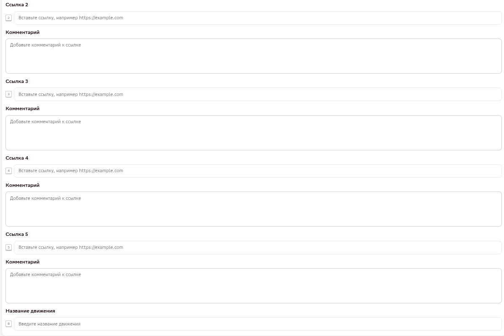
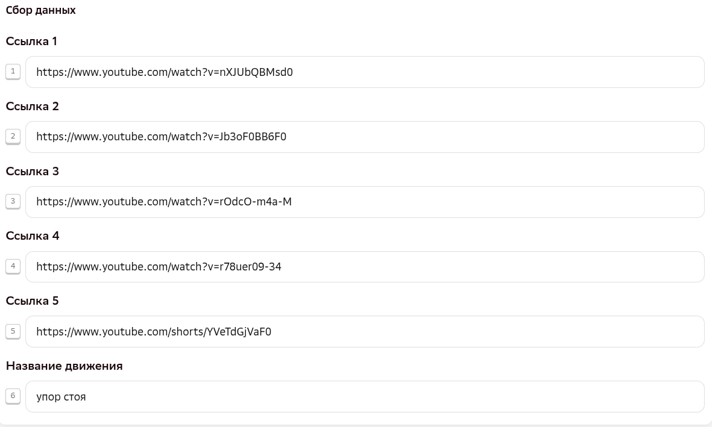
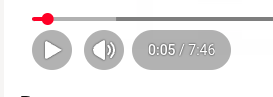
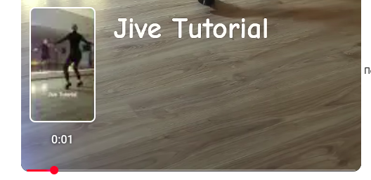
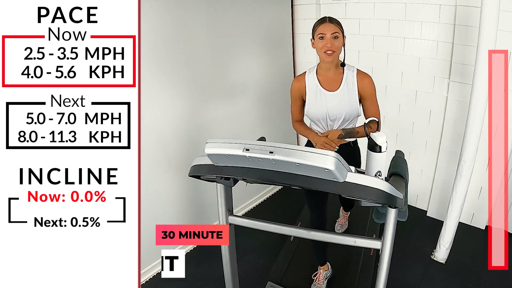
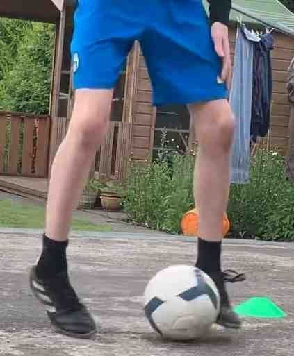

ИНТЕРФЕЙС
Формат задания
Каждое задание — это одно конкретное движение (или связка движений). Открывая задание, вы видите шесть полей: пять — под ссылки, одно — под название движения.
В задание нужно собрать от 2 до 5 видео, где разные люди в разных условиях выполняют одно и то же движение по одной и той же траектории — а не одну ссылку на одно видео.
Интерфейс окна задания


Как заполнять поля
| Поле | Что вносим |
|---|---|
| Ссылка 1 | Эталонное видео — лучшее по качеству, разрешение HD (1280×720) обязательно, и оно же должно проходить чек-лист по блочности. |
| Ссылка 2–5 | Остальные видео того же движения; допустимо более низкое качество, но не менее 512 px по меньшей стороне. Детально по блочности не проверяются — важно только, чтобы само действие было идентичным. |
| Название движения | 1–5 слов на русском языке, точное и конкретное — не абстрактное, не поза и не жанр/дисциплина, без опечаток и неточных формулировок. Даже если движение известно под иностранным термином (например, элемент из зарубежного вида спорта или танца) — название всё равно пишем по-русски. Примеры формулировок: умывание, колка дров, работа за клавиатурой, мытьё головы, приготовление еды на улице. Пример/антипример по каждой заявке — в таблице ниже. |
Название движения: пример / антипример по заявкам
| Заявка | Пример (подходит) | Антипример (не подходит) |
|---|---|---|
| 1075 | вытирание пыли | уборка (слишком общее) |
| 1076 | ронд де жамб | балет (это дисциплина, не движение) |
| 1077 | восьмёрка ногами | плавание (это вид спорта, не движение) |
| общее | волчок | фигурное катание (это дисциплина, не движение) |
| общее | поднятие корпуса из положения лёжа | поза кобры (это поза, не движение) |
«Тренировка на эллиптическом тренажёре» тоже не подходит как название — нужно конкретное движение, а не общая активность или инвентарь.
Больше примеров названий движений по своей теме — на странице заявки: 1075 · 1076 · 1077.
При добавлении только одной ссылки задание отправить нельзя. Минимально допустимое — 2 видео, если по ним явно и полностью понятно, что движения идентичны (та же траектория, те же руки/ноги и т.п.). Целевое количество — 5 видео, особенно для простых движений, где легко найти пять полностью идентичных примеров.
Что считается «простым» и «сложным» движением
Простое движение — статичное положение тела, одно повторяющееся действие; для него нужны все 5 видео. Сложное движение — несколько связок действий подряд; для него минимума в 2 видео достаточно, если идентичность полностью очевидна.
Круговые вращения плечами — положение тела статично, движение состоит из одного повторяющегося действия.
«Стрижка газона» — по сути это обычная ходьба (пусть и с газонокосилкой): слишком общее действие, а не конкретное движение.
Связка шагов на льду (брекеты) — состоит из нескольких связанных действий подряд.
- Сначала собирайте кандидатов в отдельную таблицу — ссылка, статус, комментарий — и только потом переносите финальную пятёрку в Tagme. Быстрее, чем подбирать «вслепую» прямо в форме задания.
- Ищите по конкретному названию движения, а не по общей теме или дисциплине — так видеоисточник выдаёт более релевантные ролики.
- Не стесняйтесь спросить ИИ-ассистента, как лучше сформулировать поисковый запрос под конкретное движение.
- Шортсы — рабочий источник наравне с обычными видео, иногда там больше вариативности по движению.
- В первое поле внесена ссылка на эталонное видео (HD + прошло чек-лист по блочности).
- Заполнено поле «Название движения» — точно, без опечаток, не абстрактно, на русском языке (даже для иностранных терминов).
КРИТЕРИИ
Критерии отбора видео
| Параметр | Подходит | Не подходит |
|---|---|---|
| Длительность видео | ✅ До 30 минут включительно. | ❌ Длиннее 30 минут. |
| Длительность движения | ✅ От 5 до 60 секунд. | ❌ Короче 5 секунд или длиннее 60 секунд (кроме исключения ниже*). |
| *Исключение из строки выше — видео от 2 сек | ✅ Видео короче 5 сек, но показанное действие в его рамках полностью завершено. В комплекте допустимо только одно такое короткое видео. | ❌ Видео короче 5 сек, и действие обрывается на середине; либо таких коротких видео в комплекте больше одного. |
| Склейки | ✅ Все 5 секунд показа движения — непрерывно, без монтажных склеек и переходов. Склейки в других местах ролика не мешают: достаточно одного непрерывного фрагмента с движением от 5 секунд. | ❌ Внутри этих 5 секунд есть склейка или переход. |


| Различимость людей | ✅ Человек, выполняющий движение, хорошо виден и различим, виден полностью. | ❌ Человек снят издалека; один человек теряется в толпе (например, трибуны на матче); в кадре видна только часть тела (например, только ноги). |
| Несколько человек в кадре | ✅ В кадре несколько человек, но хотя бы один чётко выполняет движение, остальные — просто на фоне. | ❌ Непонятно, кто из людей в кадре выполняет движение. |
| Текст / предметы / выход за кадр | ✅ Небольшое перекрытие текстом или предметом; частичный, кратковременный выход человека за кадр. | ❌ Человек сильно перекрыт предметом или наложением; надолго или полностью пропадает из кадра. |
| Вотермарки | ✅ Вотермарка есть, но не перекрывает человека, выполняющего движение. | ❌ Вотермарка перекрывает самого человека или его движение. |
| Рамки | ✅ Эталонное видео (поле 1) — без декоративной рамки по краю кадра. | ❌ На эталонном видео (поле 1) есть рамка (декоративная обводка по краю кадра). |
| Коллажи | ✅ Обычное видео — один кадр, одна съёмка. | ❌ Видео-коллаж (несколько роликов или кадров в одном изображении) — такое не берём. |
| Скорость съёмки | ✅ Человек двигается в своём естественном темпе — быстро или медленно, даже если на разных видео комплекта темп отличается. | ❌ Само видео искусственно ускорено или замедлено при монтаже (речь про скорость воспроизведения ролика, а не про то, как быстро или медленно двигается человек). Признак ускорения — рваные, дёрганные движения. |
| Ракурс съёмки | ✅ Любой — ракурс значения не имеет. | — |
| Приближение / отдаление камеры | ✅ Не причина отклонять видео: если кадр не сменился, зум камеры склейкой не считается. | — |
| Идентичность движения | ✅ На всех видео совпадает и название, и сама траектория движения — руки, ноги, сторона тела, амплитуда (например, везде правая нога; замах сверху вниз, а не сверху вбок; нога поднимается на одну и ту же высоту). | ❌ Совпадает только название, а траектория, поза, сторона тела или амплитуда отличаются (например, где-то левая нога, где-то правая; где-то замах сверху вниз, где-то вбок; где-то нога поднимается заметно выше, чем на остальных видео). |
| Повторы | ✅ Движение впервые собирается в проекте. | ❌ Такое же движение уже было собрано в другом задании — даже с другим набором видео. |
| Мелкая моторика | ✅ Все 5 видео показывают полностью, чётко идентичное движение. | ❌ Движения похожи, но не идентичны на 100% — такие лучше вообще не собирать. |
| Происхождение видео | ✅ Видео снято реальной камерой, реальными людьми. | ❌ Видео сгенерировано или обработано при помощи ИИ. |
| Блочность | ✅ Эталонное видео (поле 1) проходит чек-лист — не больше 2 «против» из 5. | ❌ Эталонное видео не проходит чек-лист — 3 и более «против» из 5. См. страницу «Блочность». |
Корнер-кейсы

